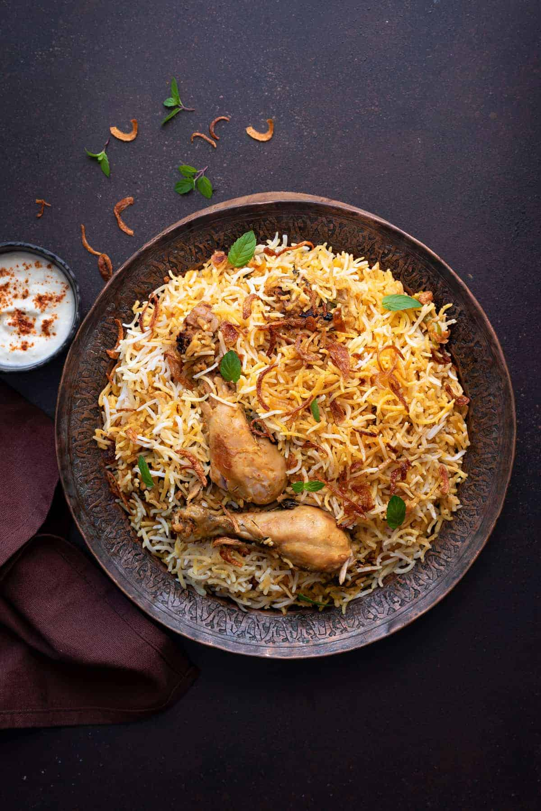

My favorite food is Chicken Biryani. I love it because it has all the ingredients that make the cuisine healthy, aromatic, and tasty.
Here are some of my favorite restaurants that I recommend trying. Each place offers something unique, from great food to an enjoyable dining experience.
| Restaurant Name | Why I Recommend It | Location |
|---|---|---|
| Bawarchi | Excellent Biryani varieties | RTC X roads |
| Hotel Sohail | Fresh and authentic Paya | Malakpet |
| Kritunga | Delicious Curries | Lb nagar |
| Chilles | Great Fast Food options | Nadergul |